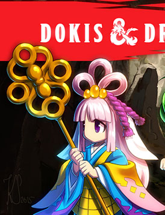

Dokis & Dragons
Prepare-se para embarcar em uma aventura no clube de litera....quer dizer clube de D&D Aqui você pode conhecer nossas maravilhosas aventureiras, Sayori, Monika, Yuri e Natsuki! Junte-se a eles na grande conquista de um mundo fantástico! Crie seu próprio personagem e arrisque-se a se apaixonar por essas garotas em D&D! Na sua conquista, você rolará os dados, enfrentará muitos inimigos e aproveitará a oportunidade para demonstrar suas habilidades! Cada passo do caminho poderia ser facilmente influenciado pelo próprio destino!
⬇ Download